AGENTES DE VALORANT
¿QUE SON LOS AGENTES EN VALORANT?
Los Agentes son los personajes jugables de Valorant, el título con el que por primera ver
Riot Games se adentra en los shooter en primera persona. Conocer a estos personajes, aprender
a usarlos y aprovecharse de sus habilidades especiales es algo clave y fundamental a la hora
de ganar nuestras partidas y tener éxito. Así que en esta página encontrarás toda la información
de los 19 agentes disponibles actualmente en Valorant.
- Astra
- Breach
- Brimstone
- Chamber
- Cypher
- Fade
- Jett
- KAY/O
- Killjoy
- Neon
- Omen
- Phoenix
- Raze
- Reyna
- Sage
- Skye
- Sova
- Viper
- Yoru
Antes de verlos, hay que saber un par de detalles sobre los 19 agentes. Empecemos hablando de como
funcionan sus habilidades.
Cada uno de los agentes tiene en total 4 habilidades únicas; dos básicas, una firma y una definitiva.
Estas habilidades deben comprarse entre rondas(aunque la mayoría de las firmas son gratuitas y se recarga como si fuera una pasiva).
Además, la definitiva requiere de puntos para poder activarse, los cuaales se ganan realizando asesinatos, colocando la spike o recogiendo orbes en el escenario.
Las cargas adquiridas de habilidades se mantienen entre rondas hasta que son usadas.
Clases de agentes
Los personajes de Valorant estan divididos en 4 clases principales diferentes y cada una de ellas representa un estilo de juego concreto.
Los cuales son:
Centinelas:son expertos en defensa que se centran en bloquear áreas y vigilar los flancos tanto durante las rondas de ataque como en las de defensa.
Controladores:se especializan en dividir terrenos peligrosos en varias zonas para que su equipo pueda encargarse del resto.
Duelistas:son asesinos autosuficientes que, gracias a sus habilidades y destrezas, suelen conseguir iniciar enfrentamientos y anotar muchos asesinatos.
Iniciadores:se centran en servirse deángulos inusuales para ayudar a su equipo y adentrarse en territorios clave y alejar a los defensores.
EMPECEMOS
#1.Astra
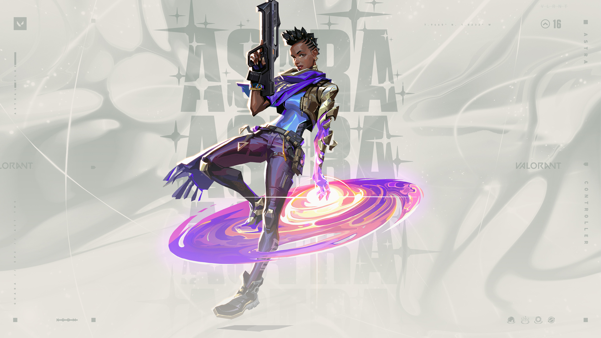
Clase:controlador.
Nacionalidad:Ghana.
Disponibilidad:bloqueada de inicio (también se puede comprar por 1000 puntos valorant)
Astra controla las energías del cosmos para dar forma al campo de batalla a su antojo. Con pleno dominio de su forma astral y un gran talento para la
anticipación estratégica, siempre va eones por delante de los movimientos de sus enemigos.
Las habilidades especiales de Astra son las siguientes:
Q de Astra
Habilidad Q: Pulso nova
Tipo: básica.
Coste: 12 segundos de reutilización.
Función: coloca estrellas en Forma astral (X). Activa una estrella para detonar un Pulso nova. El Pulso nova se carga brevemente y explota, lo que aturde a todos los jugadores en la zona.
Habilidad E de Astra
Habilidad E: Nebulosa
Tipo: firma.
Coste: 15 segundos de reutilización.
Función: coloca estrellas en Forma astral (X). Activa una estrella para transformarla en una Nebulosa (humo). Usa (F) en una estrella para disiparla, lo que recupera la estrella para poder volver a colocarla tras un tiempo. Disipar una estrella crea una breve Nebulosa falsa en su ubicación antes de recuperarla.
Habilidad C de Astra
Habilidad C: Pozo gravitatorio
Tipo: básica.
Coste: 12 segundos de reutilización.
Función: coloca estrellas en Forma astral (X). Activa una estrella para crear un Pozo gravitatorio. Atrae hacia el centro a todos los jugadores en la zona antes de que explote, lo que causa que todos los jugadores atrapados en el interior se vuelvan frágiles.
Habilidad X de Astra
Habilidad X: Forma astral / Separación cósmica
Tipo: definitiva. |
Coste: 150 créditos (forma astral) / 7 puntos de definitiva.
Función: activa (X) para entrar en Forma astral y poder colocar estrellas. Las estrellas se pueden reactivar más tarde para transformarlas en un Pulso nova, una Nebulosa o un Pozo gravitatorio.
Cuando Separación cósmica está cargada, dispara en Forma astral para empezar a apuntar y, a continuación, usa el disparo para elegir dos ubicaciones. Se creará una Separación cósmica infinita que conecte los dos puntos. Separación cósmica bloquea las balas y atenúa en gran medida los sonidos.
#2. Breach
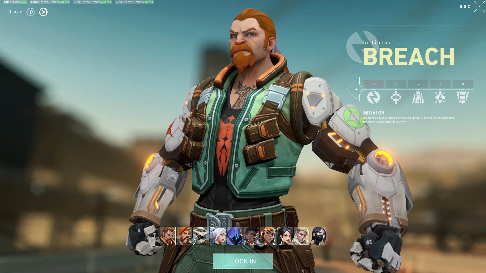
Clase: Iniciador.
Nacionalidad: Suecia.
Disponibilidad: bloqueado de inicio (también se puede comprar por 1000 puntos de Valorant).
Como ocurre con los iniciadores, Breach es un buen personaje si lo que buscas es defender a tus compañeros y preparar el terreno para dar la bienvenida al equipo enemigo. Cuanto más conozcas los mapas y más entiendas sus habilidades, mejor te desenvolverás con este agente.
Las habilidades especiales de Breach son las siguientes:
Habilidad Q: Explosión cegadora
Tipo básica.
Coste: 250 créditos.
Función: te equipas con una carga explosiva cegadora que puedes disparar para liberar una rápida explosión que atraviesa paredes. La carga ciega a todos los jugadores que la estén mirando.
Habilidad E: falla
Tipo; firma.
Coste: gratuita.
Función: te equipas con una bomba sísmica que puedes disparar para liberar un seísmo que aturde a todos los enemigos dentro de la zona de efecto.
Habilidad C: Réplica
Tipo: básica.
Coste: 200 créditos.
Función: te equipas con una carga explosiva de fusión. Al dispararla puede atravesar paredes tras un pequeño retardo y su explosión inflige gran daño a cualquiera que esté dentro de su área de efecto.
Habilidad X: Fragor imparable
Tipo: definitiva.
Coste: 7 puntos de definitiva.
Función: te equipas con una carga explosiva sísmica que puedes disparar para crear un seísmo que se extiende por una gran zona en forma de cono. Este seísmo aturde y lanza por los aires a los enemigos.
#3. Brimstone
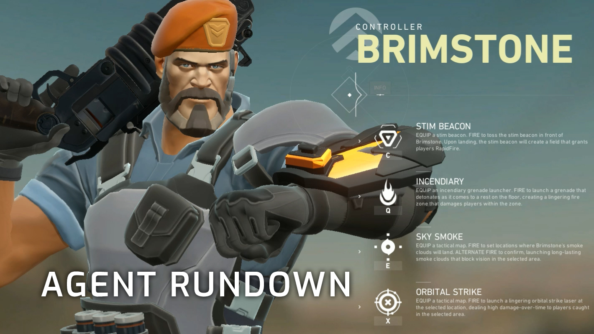
Clase: Controlador.
Nacionalidad: EE.UU.
Disponibilidad: desbloqueado desde el inicio.
Brimstone funciona un poco como el clásico personaje "soldado", típico de muchos shooters online. Sus habilidades directas y sencillas de comprender y usar le confieren un equilibrio genial para casi cualquier situación y puede que por esto mismo sea el agente más accesible con el que jugar al principio. Así que es una elección fenomenal para los jugadores novatos y principiantes que quieran acomodarse a las mecánicas de Valorant.
Las habilidades especiales de Brimstone son las siguientes.
Habilidad Q de Brimstone
Habilidad Q: Incendiario
Tipo: básica.
Coste: 250 créditos.
Función: te equipas con un lanzagranadas incendiarias. Con este arma puedes disparar una granada que explota en cuanto toca el suelo generando una zona de fuego persistente que daña a los jugadores que estén en el interior.
Habilidad E de Brimstone
Habilidad E: Cortina de humo
Tipo: firma.
Coste: 100 créditos.
Función: te equipas con un mapa táctico de la zona. Puedes marcar una ubicación del mapa y luego confirmar el disparo para que caiga en dicho lugar una nube de humo de larga duración que bloquea la visión de los jugadores que estén dentro de ella. También es útil para impedir que los jugadores te vean si la colocas estatégicamente en huecos de puertas o pasillos estrechos.
Habilidad C de Brimstone
Habilidad C: Baliza estimulante
Tipo: básica.
Coste: 100 créditos.
Función: te equipas con una baliza estimulante que puedes lanzar hacia el frente. Al tocar el suelo la baliza se desplega creando un área o campo que otorga disparo rápido a todos los jugadores que estén dentro de ella.
Habilidad X de Brimstone
Habilidad X: Golpe orbital
Tipo: definitiva.
Coste: 6 puntos de definitiva.
Función: te equipas con un mapa táctico de la zona y gracias a este puedes señalar una ubicación para disparar un potente golpe orbital de láser. Provoca un gran daño prolongado a los enemigos que se encuentren en la zona afectada.
#4. Chamber
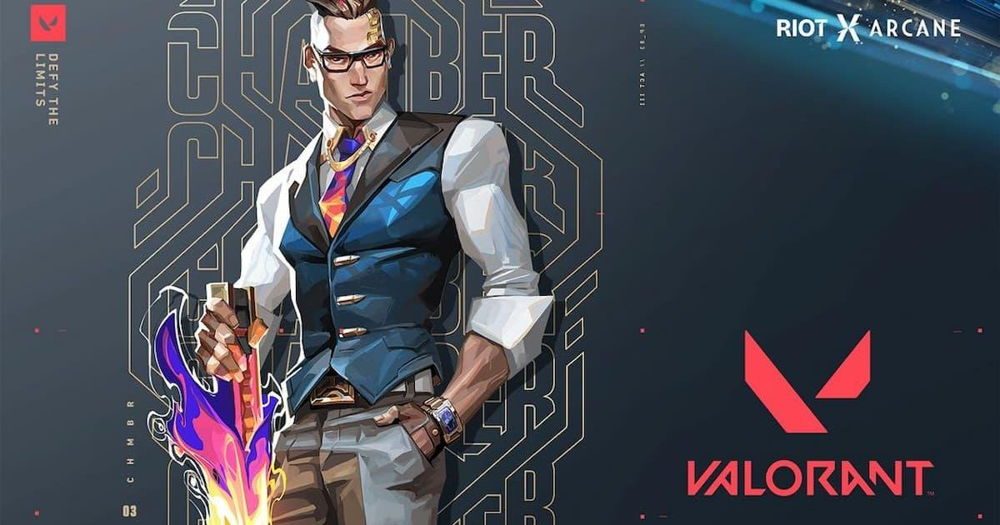
Clase: Centinela.
Nacionalidad: Francia.
Disponibilidad: bloqueado de inicio (se puede comprar con 1000 puntos Valorant).
Chamber es un diseñador de armas siempre bien vestido y bien pertrechado que expulsa a los agresores con precisión letal. Aprovecha su arsenal personalizado para repeler, eliminar enemigos a distancia y crear la contingencia perfecta para cada plan.
Las habilidades especiales de Chamber son las siguientes.
Habilidad Q de Chamber
Habilidad Q: Cazador de cabezas
Tipo: básica.
Coste: 100 créditos.
Función: actívala para equipar una pistola pesada. Utiliza el botón de modo de disparo alternativo para apuntar con la mira.
Habilidad E de Chamber
Habilidad E: Rendez-Vous
Tipo: firma.
Coste: gratuita, 15 segundos de reutilización.
Función: coloca dos anclajes de teleportación. Mientras estén en el suelo y al alcance, reactiva la habilidad para teleportarte rápidamente al otro anclaje. Los anclajes se pueden recoger para volver a colocarlos.
Habilidad C de Chamber
Habilidad C: Marca registrada
Tipo: básica.
Coste: 150 créditos.
Función: coloca una trampa que rastrea a enemigos. Cuando un enemigo visible entra en el alcance, la trampa inicia una cuenta atrás y, a continuación, desestabiliza el terreno a su alrededor, lo que crea un campo persistente que ralentiza a los jugadores que se encuentren en su interior.
Habilidad X de Chamber
Habilidad X: Tour de force
Tipo: Definitiva.
Coste: 7 puntos de definitiva.
Función: actívala para sacar un poderoso rifle de francotirador personalizado que mata a los enemigos con cualquier impacto directo. Matar a un enemigo genera un campo persistente que ralentiza a los jugadores que se encuentren en su interior.
#5. Cypher
 Clase: Centinela.
Nacionalidad: Marruecos.
Disponibilidad: bloqueado de inicio (se puede comprar con1000 puntos Valorant).
Clase: Centinela.
Nacionalidad: Marruecos.
Disponibilidad: bloqueado de inicio (se puede comprar con1000 puntos Valorant).
Cypher, como buen centinela, es capaz de adelantarse a los movimientos de los enemigos y cubrir posiciones. Sus habilidades están destinadas a la defensa, así que te recomendamos que lo uses si lo tuyo no es estar al pie del cañón y en el frente de línea. Más bien hay que usarlo creando estrategias con nuestros compañeros y acompañarlos en la batalla dándoles apoyo. Es un personaje que puede funcionar genial cuando se juega en el bando de los defensores y hay que mantener a salvo una zona de la SPIKE.
Las habilidades especiales de Cypher son las siguientes:
Habilidad Q de Cypher
Habilidad Q: Prisión cibernética
Tipo: básica.
Coste: 100 créditos.
Función: lanzas de inmediato una prisión cibernética. Esta prisión puede activarse a distancia, apuntando sobre ella, y al hacerlo se creará una zona que bloquea la visión de los enemigos si quieren atravesarla.
Habilidad E de Cypher
Habilidad E: Cámara espía
Tipo: firma.
Coste: gratuita.
Función: te equipas con una cámara espía que puedes disparar para fijar en una ubicación. Una vez hecho eso puedes controlar la visión de la cámara (dejando expuesto a Cypher, así que cuidado) para ver lo mismo que ella ve, e incluso puedes disparar un dardo marcador que revelará la posición del enemigo al que alcance.
Habilidad C de Cypher
Habilidad C: Cable trampa
Tipo: básica.
Coste: 200 créditos.
Función: te equipas con un cable trampa, destructible pero oculto. Puedes dispararlo hacia una pared y este se extenderá hacia la pared del lado opuesto, y también puedes recogerlo para moverlo hacia otra posición. Los jugadores enemigos que atraviesen el cable se quedarán anclados y su posición se revelará, si no logran dispararle a tiempo para librarse acabarán finalmente aturdidos.
Habilidad X de Cypher
Habilidad X: Hurto neuronal
Tipo: definitiva.
Coste: 7 puntos de definitiva.
Función: puedes apuntar sobre un enemigo muerto con tu mira y usar esta habilidad al instante para revelar la posición de todos los enemigos vivos restantes. Especialmente útil cuando solo quedan unos pocos oponentes o no sabes dónde se esconden.
#6. Fade
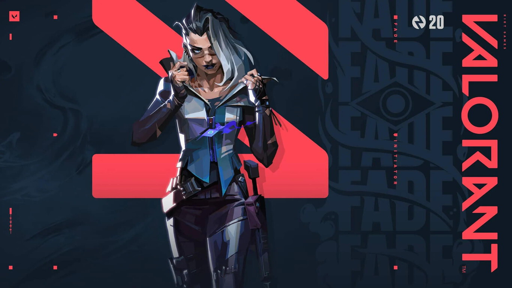
Clase: Iniciador.
Nacionalidad: Turquía.
Disponibilidad: bloqueado de inicio (se puede comprar por 1000 puntos Valorant).
Fade, la cazarrecompensas turca, desata el poder de las pesadillas para apoderarse de los secretos del enemigo. En armonía con el terror puro, acecha a sus objetivos y revela sus miedos más profundos antes de aplastarlos en la oscuridad.
Las habilidades especiales de Fade son las siguientes:
Habilidad Q de Fade
Habilidad Q: Capturar
Tipo: básica.
Coste: 200 créditos.
Función: equipa un orbe de tinta de las pesadillas. Puede disparar el orbe para hacerlo caer en picado al suelo después de un tiempo determinado. Al impactar la tinta explotará y creará una zona en la que los enemigos que queden atrapados en ella no podrán escapar por medios normales.
Habilidad E de Fade
Habilidad E: Atormentar
Tipo: firma.
Coste: gratuita.
Función: equipa una entidad de las pesadillas. Puede disparar el orbe para hacerlo caer en picado al suelo después de un tiempo determinado. Al impactar se convertirá en un ente de las pesadillas que revelará la ubicación de los enemigos en su línea de visión. Los enemigos pueden destruir esta entidad.
Habilidad C de Fade
Habilidad C: Acechadora
Tipo: básica.
Coste: 250 créditos.
Función: te equipas con una Acechadora que puedes lanzar en línea recta. La Acechadora se enfocará en cualquier enemigo o rastro en su cono de visión frontal y lo perseguirá y ofuscará si lo alcanza.
Habilidad X de Fade
Habilidad X: Anochecer
Tipo: definitiva.
Coste: 7 puntos de definitiva.
Función: Fade se equipa con el poder del Miedo. Esto le permite lanzar una onda de energía de las pesadillas que puede atravesar paredes. La energía crea un rastro hacia el oponente, además de ensordecerlo y debilitarlo.
#7. Jett
 Clase: Duelista.
Nacionalidad: Corea.
Disponibilidad: desbloqueado desde el inicio.
Clase: Duelista.
Nacionalidad: Corea.
Disponibilidad: desbloqueado desde el inicio.
Jett es una duelista muy versátil que encantará a los jugadores que buscan velocidad de movimiento y evasión dentro de Valorant. Sus habilidades le otorgan una movilidad por los mapas más alta que los otros personajes, ya que puede impulsarse por los aires o realizar un dash, algo ideal para esquivar una muerte segura o incluso para sorprender a un jugador desprevenido y ganarle ventaja. Además por todo esto funciona bastante bien aún cuando no seamos muy dados a jugar en equipo combinándonos con nuestros compañeros de escuadrón.
Las habilidades especiales de Jett son las siguientes:
Habilidad Q de Jett
Habilidad Q: Vendaval
Tipo: básica.
Coste: 150 créditos.
Función: Jett se propulsa instantáneamente a mucha altura hacia arriba.
Habilidad E de Jett
Habilidad E: Viento de cola
Tipo: firma.
Coste: gratuita.
Función: Jett se propulsa de inmediato hacia la dirección en la que se esté moviendo, con mucha rapidez. Si está quieta, se propulsa hacia delante.
Habilidad C de Jett
Habilidad C: Borrasca
Tipo: básica.
Coste: 200 créditos.
Función: lanza un proyectil al instante que se expande en una nube al tocar una superficie, esto bloquea la visión brevemente de otros jugadores. Si se mantiene el botón de habilidad pulsado el humo se curvará en la dirección de la mira.
Habilidad X de Jett
Habilidad X: Tormenta de cuchillas
Tipo: definitiva.
Coste: 7 puntos de definitiva.
Función: te equipas con un conjunto de cuchillos volantes de alta precisión que se recargan cuando acabas con un oponente. Puedes disparar cuchillos de uno en uno o si alternas el modo de disparo puedes lanzar todas las dagas que tengas hacia tu enemigo.
#8. KAY/O
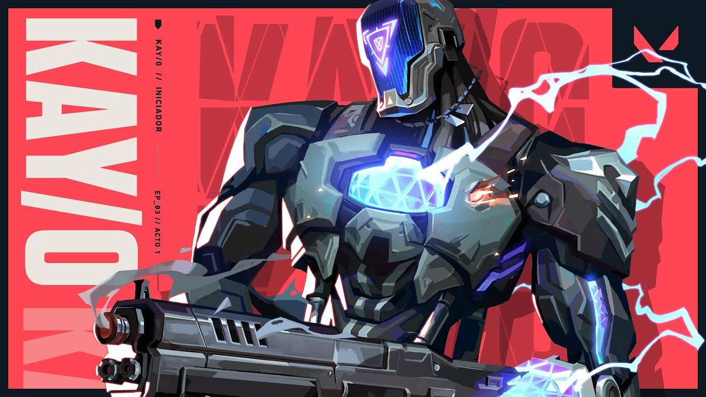
Clase: Iniciador.
Nacionalidad: N/A.
Disponibilidad: bloqueado de inicio (se puede comprar por 1000 puntos Valorant).
KAY/O es una máquina de guerra creada con un solo propósito: neutralizar radiantes. Su poder para suprimir las habilidades enemigas neutraliza la capacidad de sus rivales para contraatacar, un aspecto que le da a él y a sus aliados la ventaja definitiva en la batalla.
Las habilidades especiales de KAY/O son las siguientes:
Habilidad Q de KAY/O
Habilidad Q: Memoria/Flash
Tipo: básica.
Coste: 250 créditos.
Función: una granada cegadora. La granada cegadora explota después de un breve periodo de tiempo tras lanzarla y ciega a todos en la línea de visión.
Habilidad E de KAY/O
Habilidad E: Punto/Cero
Tipo: firma.
Coste: gratuita.
Función: una cuchilla de supresión lista para lanzar. La cuchilla se pega contra la primera superficie que toca, luego explota y suprime a cualquier oponente que se encuentre en el radio de la explosión.
Habilidad C de KAY/O
Habilidad C: Frag/Mentación
Tipo: básica.
Coste: 200 créditos.
Función: un fragmento explosivo que se puede disparar para lanzar. El fragmento se pega al suelo y explota varias veces, lo que inflige daño casi mortal en el centro con cada explosión.
Habilidad X de KAY/O
Habilidad X: Null/CMD
Tipo: definitiva.
Coste: 7 puntos de definitiva.
Función: se sobrecarga al instante con energía de radianita polarizada que le da poder a KAY/O y causa que grandes pulsos de energía emanen desde su ubicación. Los enemigos impactados por dichos pulsos quedan suprimidos durante un breve momento.
#9. Killjoy
 Clase: Centinela.
Nacionalidad: Alemania.
Disponibilidad: bloqueado de inicio (se puede comprar por 1000 puntos Valorant).
Clase: Centinela.
Nacionalidad: Alemania.
Disponibilidad: bloqueado de inicio (se puede comprar por 1000 puntos Valorant).
Killjoy es una centinela y una genio que posee un arsenal de inventos entre los que se encuentran unos bots muy interesantes. Sus capacidades la hacen una muy buena opción de cara a asegurar el campo de batalla con facilidad.
Las habilidades especiales de Killjoy son las siguientes:
Habilidad Q de Killjoy
Habilidad Q: Bot de alarma
Tipo: básica.
Coste: 200 créditos.
Función: equipas un bot de alarma camuflado que puedes desplegar para dar caza a los enemigos dentro de su alcance. Cuando alcanza a su objetivo, el bot explota haciendo daño y aplicando vulnerabilidad.
Habilidad E de Killjoy
Habilidad E: Torreta
Tipo: firma.
Coste: gratuita.
Función: equipas una torreta que se despliega en una zona para disparar a todo enemigo que encuentre en un cono de 180 grados.
Habilidad C de Killjoy
Habilidad C: Nanoenjambre
Tipo: básica.
Coste: 200 créditos.
Función: disparas granadas de nanoenjambre que se camuflan y que puedes activar de forma remota para desplegar un enjambre.
Habilidad X de Killjoy
Habilidad X: Bloqueo
Tipo: definitiva.
Coste: 7 puntos de definitiva.
Función: disparas un dispositivo de bloqueo que detiene a todos los enemigos que estén dentro de su radio de efecto. Los enemigos pueden destruir este dispositivo.
#10. Neon
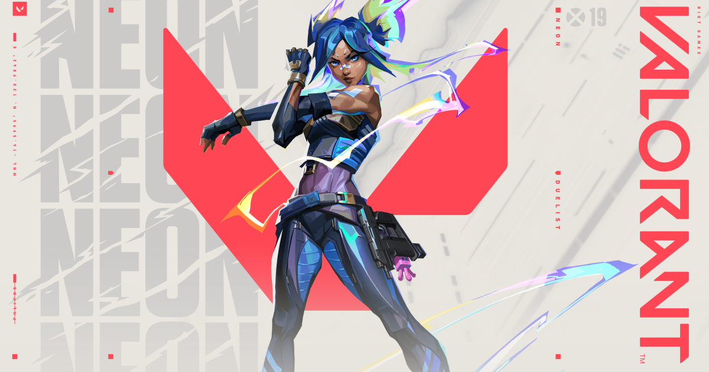
Clase: Duelista.
Nacionalidad: Filipinas.
Disponibilidad: bloqueada de inicio (se puede comprar por 1000 puntos Valorant).
Elimina a tus enemigos a la velocidad de la luz con Neon. Esta joven duelista puede superar al resto en cuanto a movilidad gracias a su juego de ritmo rápido que combina con descargas de ráfagas y resplandores bioeléctricos.
Las habilidades especiales de Neon son las siguientes:
Habilidad Q de Neon
Habilidad Q: Explosión de relé
Tipo: básica.
Coste: 200 créditos.
Función: lanza instantáneamente un rayo de energía que rebota una vez. Al golpear cada superficie, el rayo electrifica el suelo bajo ella con una explosión aturdidora.
Habilidad E de Neon
Habilidad E: A toda máquina
Tipo: firma.
Coste: gratuita (2 bajas de recarga).
Función: canaliza instantáneamente el poder de Neon para aumentar su velocidad. Cuando esté cargada, utilizad el disparo alternativo para activar un deslizador eléctrico. La carga del deslizador se reinicia con cada dos asesinatos.
Habilidad C de Neon
Habilidad C: Carril rápido
Tipo: básica.
Coste: 300 créditos.
Función: dispara dos líneas de energía hacia delante por el suelo. Dichas líneas se desplazan una corta distancia o hasta chocar contra algún obstáculo. Entonces, las líneas se alzan para convertirse en muros de energía estática que bloquean la visión e infligen daño a los enemigos que los atraviesan.
Habilidad X de Neon
Habilidad X: Sobrecarga
Tipo: definitiva.
Coste: 7 puntos de definitiva.
Función: Neon desata todo su poder y velocidad durante un breve periodo de tiempo. Disparad para canalizar su poder en un mortífero rayo móvil y preciso. Su duración se reinicia con cada asesinato.
#11. Omen
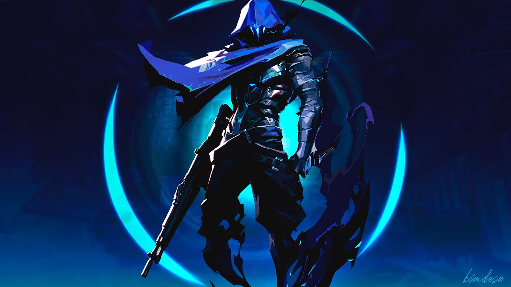
Clase: Controlador.
Nacionalidad: Desconocida.
Disponibilidad: bloqueado de inicio (se puede comprar por 1000 puntos Valorant).
Omen es una especie de cazador de las sombras que puede ser muy escurridizo en manos hábiles. Especialmente útil si se trabaja en equipo, y un personaje bastante ofensivo con el que hay que tener mucho cuidado si se encuentra en el campo de batalla ya que, por ejemplo, te puede aparecer por sorpresa en la espalda y habrás muerto antes de que te haya dado tiempo a reaccionar.
Las habilidades especiales de Omen son las siguientes:
Habilidad Q de Omen
Habilidad Q: Paranoia
Tipo: básica.
Coste: 300 créditos.
Función: disparar instantáneamente un proyectil sombrío hacia delante que reduce brevemente el alcance de la visión de todos los jugadores que toca y también los ensordece. Este proyectil además puede atravesar paredes.
Habilidad E de Omen
Habilidad E: Velo tenebroso
Tipo: firma.
Coste: gratuita.
Función: te equipas con un orbe sombrío y entras en un mundo paralelo para colocarlo y marcar su objetivo. Si lo disparas genera una esfera duradera que bloquea la visión.
Habilidad C de Omen
Habilidad C: Aparición tenebrosa
Tipo: básica.
Coste: 150 créditos.
Función: te equipas con una habilidad que te permite caminar entre las sombras. Al disparar entras en un breve periodo de canalización y después te teletransportas a la ubicación deseada, al hacerlo los enemigos no te verán pero podrán oír el sonido que generas desde la posición de salida.
Habilidad X de Omen
Habilidad X: Desde las sombras
Tipo: definitiva.
Coste: 7 puntos de definitiva.
Función: te equipas con un mapa táctico y puedes señalar una ubicación hacia la que quieres teletransportarte. Mientras lo haces Omen aparece como una sombra por el escenario y los enemigos pueden dispararte para cancelar la habilidad.
#12. Phoenix
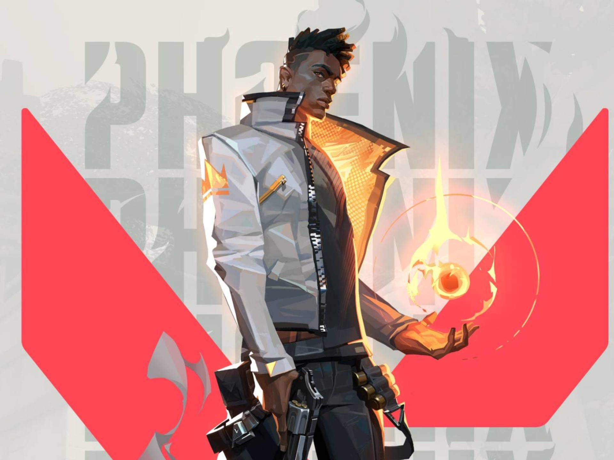
Clase: Duelista.
Nacionalidad: Reino Unido.
Disponibilidad: desbloqueado desde el inicio.
Phoenix es un duelista muy hábil con unas habilidades que lo hacen interesante de cara a la ofensiva. Ideal para los jugadores que quieren ir directos a los tiroteos y conseguirse muchas bajas.
Las habilidades especiales de Phoenix son las siguientes:
Habilidad Q de Phoenix
Habilidad Q: Bola curva
Tipo: básica.
Coste: 250 créditos.
Función: te equipas con un orbe fulgurante que puedes disparar a izquierda o derecha, explota poco después de lanzarlo y nubla la vista de cualquiera que lo vea.
Habilidad E de Phoenix
Habilidad E: Combustión
Tipo: firma.
Coste: gratuita.
Función: te equipas con una bola de fuego que puedes lanzar para que explote al hacer contacto con una superficie, generando una zona de fuego persistente.
Habilidad C de Phoenix
Habilidad C: Llamarada
Tipo: básica.
Coste: 200 créditos.
Función: te equipas con una pared de llamas. Puede dispararse para crear una línea de llamas hacia delante que bloquea la visión y quema a los enemigos que la toquen.
Habilidad X de Phoenix
Habilidad X: Cenizas
Tipo: definitiva.
Coste: 6 puntos de definitiva.
Función: colocas al instante un marcador en la posición actual de Phoenix. Mientras está activa, si te matan (o cuando se agota el tiempo) volverás de inmediato a la ubicación del marcador con toda tu vida al completo y las armas recargadas.
#13. Raze
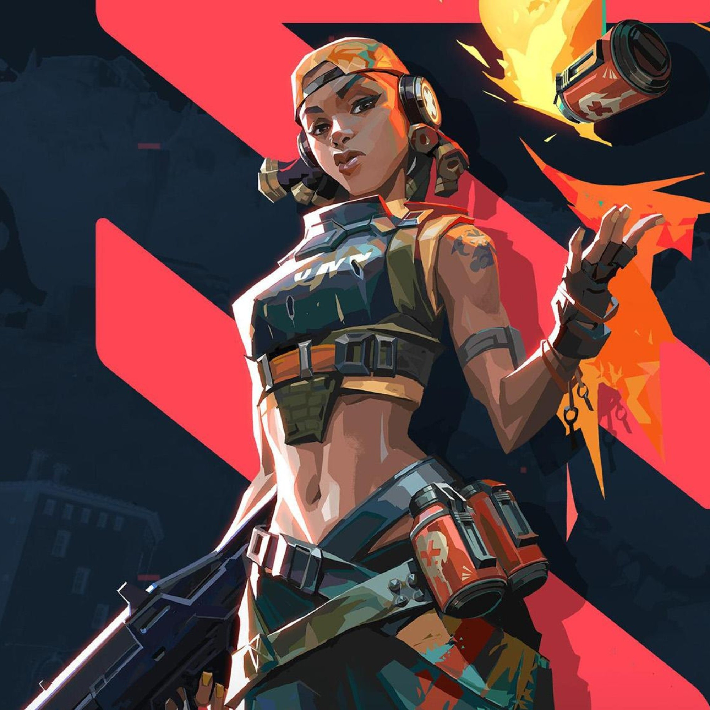
Clase: Duelista.
Nacionalidad: Brasil.
Disponibilidad: bloqueado de inicio (se puede comprar por 1000 puntos Valorant).
Raze es otra duelista que, como tal, funciona especialmente en la línea más ofensiva de las rondas. Úsala cuando quieras abrir paso a tu equipo y atacar fuertemente sin descanso ni piedad para tus enemigos.
Las habilidades especiales de Raze son las siguientes:
Habilidad Q de Raze
Habilidad Q: Fardo explosivo
Tipo: básica.
Coste: 200 créditos.
Función: lanzas un fardo explosivo que se adhiere a las superficies y que puedes activar después para hacer que explote y dañe y desplace a cualquier enemigo que alcance.
Habilidad E de Raze
Habilidad E: Balas de pintura
Tipo: firma.
Coste: gratuita.
Función: te equipas con una granada de racimo, puedes dispararla para que explote y se creen submuniciones que infligirán daño a los enemigos alcanzados dentro de su rango.
Habilidad C de Raze
Habilidad C: Bot explosivo
Tipo: básica.
Coste: 400 créditos.
Función: te equipas con un bot explosivo que puedes desplegar en línea recta hacia delante. El bot además rebota en las paredes y si se fija en un enemigo lo perseguirá hasta alcanzarlo y explotar para hacerle gran daño.
Habilidad X de Raze
Habilidad X: Cierra telones
Tipo: definitiva.
Coste: 8 puntos de definitiva.
Función: te equipas con un lanzacohetes que puedes disparar para generar un daño en área masivo cuando el cohete entre en contacto con cualquier cosa.
#14. Reyna
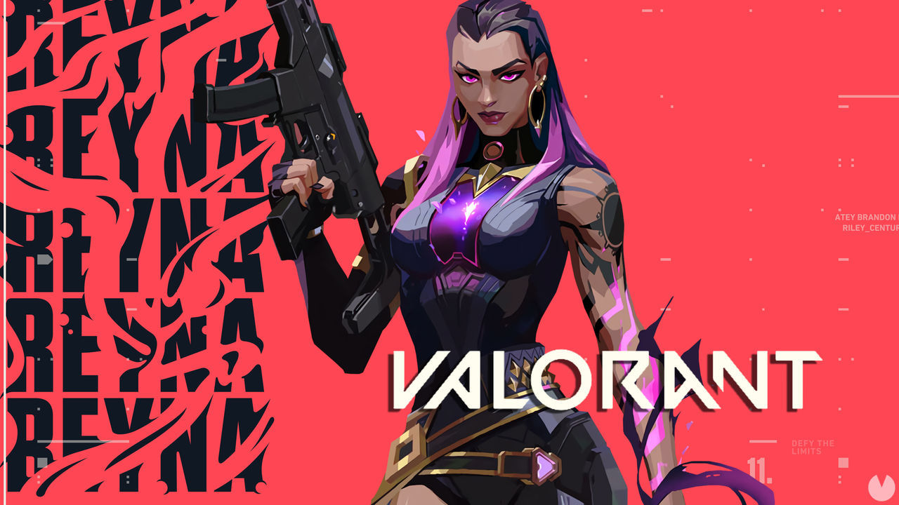
Clase: Duelista.
Nacionalidad: México.
Disponibilidad: bloqueado de inicio (se puede comprar por 1000 puntos Valorant).
Reyna es una duelista con una capacidad ofensiva muy considerable, capaz de aprovecharse de los orbes que producen sus enemigos muertos para recuperar vida, volverse intangible o incluso invisible al combinar sus habilidades con cabeza.
Las habilidades especiales de Reyna son las siguientes:
Habilidad Q de Raze
Habilidad Q: Devorar
Tipo: básica.
Coste: 100 créditos.
Función: los enemigos asesinados por Reyna dejan orbes de alma que duran 3 segundos. Puedes devorar estos orbes para consumirlos al instante y recuperar vida (al obtener 100 puntos de vida con esta habilidad la cantidad adicional decaerá).
Habilidad E de Raze
Habilidad E: Despreciar
Tipo: firma.
Coste: gratuita.
Función: consumes instantáneamente un orbe de alma cercano y Reyna se vuelve intangible durante un breve periodo. Si la definitiva está activa, Despreciar te hace también invisible.
Habilidad C de Raze
Habilidad C: Mirada lasciva
Tipo: básica.
Coste: 250 créditos.
Función: te equipas un ojo etéreo destructible. Puedes activarlo para lanzar el ojo hacia delante una corta distancia, limitando la visión de todos los enemigos que lo miren.
Habilidad X de Raze
Habilidad X: Emperatriz
Tipo: definitiva.
Coste: 6 puntos de definitiva.
Función: entras en un frenesí que aumenta drásticamente la velocidad de disparo, de equipamiento y de recarga. Consigue cargas infinitas de habilidades de Cosecha de almas. Si consigues un asesinato se reinicia la duración.
#15. Sage
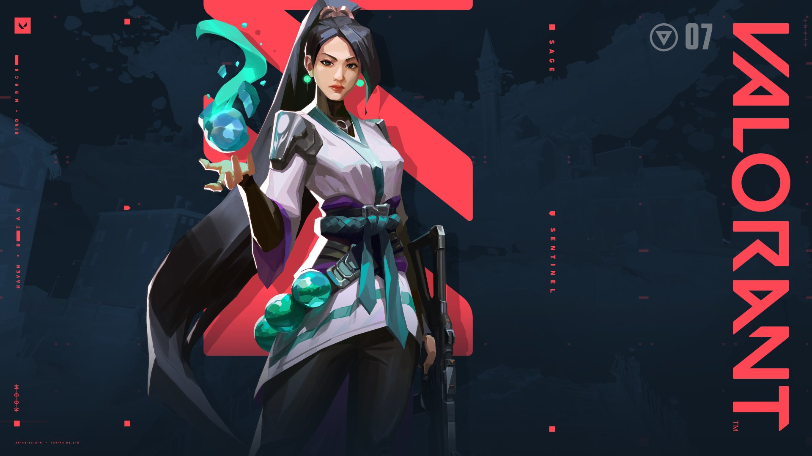
Clase: Centinela.
Nacionalidad: China.
Disponibilidad: desbloqueado desde el inicio.
Sage es el personaje sanador o médico de Valorant. Sus habilidades están centradas en la defensa y la curación tanto propia como de compañeros de equipo, e incluso en la reanimación de los caídos, algo que puede cambiar el curso de cualquier ronda que parezca perdida.
Las habilidades especiales de Sage son las siguientes:
Habilidad Q de Sage
Habilidad Q: Orbe de ralentización
Tipo: básica.
Coste: 200 créditos.
Función: te equipas con un orbe de ralentización que puedes lanzar hacia adelante para que explote al aterrizar, generando un campo persistente que ralentiza a cualquier jugador que lo pise.
Habilidad E de Sage
Habilidad E: Orbe de sanación
Tipo: firma.
Coste: gratuita.
Función: te equipas con un orbe de sanación. Puedes usarlo sobre ti para curarte o apuntar a un compañero malherido para otorgarle más salud.
Habilidad C de Sage
Habilidad C: Orbe barrera
Tipo: básica.
Coste: 400 créditos.
Función: te equipas con un orbe barrera que puedes disparar para colocar una pared sólida que bloquea el paso. Se puede rotar la posición de la barrera antes de colocarla.
Habilidad X de Sage
Habilidad X: Resurrección
Tipo: definitiva.
Coste: 8 puntos de definitiva.
Función: te permite apuntar a un aliado que haya muerto en la ronda para devolverlo a la vida tras unos instantes y que siga combatiendo con toda la vida al completo.
#16. Skye
 Clase: Iniciador.
Nacionalidad: Australia.
Disponibilidad: bloqueado de inicio (se puede comprar por 1000 puntos Valorant).
Clase: Iniciador.
Nacionalidad: Australia.
Disponibilidad: bloqueado de inicio (se puede comprar por 1000 puntos Valorant).
Skye es una intrépida soldado procedente del salvaje y hostil territorio de Australia. Tiene una banda de bestias capaces de abrir camino u obstaculizar a los enemigos y además posee poderes para curar a sus aliados. Un equipo en el que esté Skye es más fuerte y seguro.
Las habilidades especiales de Skye son las siguientes:
Habilidad Q de Skye
Habilidad Q: Precursor
Tipo: básica.
Coste: 250 créditos.
Función: Skye puede invocar a un tigre de Tasmania que es enviado al ataque bajo el control del jugador. Este tigre puede saltar hacia delante y explotar en una conmoción cerebral que daña directamente a todos los enemigos a su alcance.
Habilidad E de Skye
Habilidad E: Luz guía
Tipo: firma.
Coste: 250 créditos.
Función: se equipa con un halcón que puede lanzar hacia delante o guiar en la dirección de su punto de mira. Además mientras el halcón está en vuelo puede transformarse en un destello que golpea y confirma si un enemigo estaba dentro de su alcance o línea de visión.
Habilidad C de Skye
Habilidad C: Reforestación
Tipo: básica.
Coste: 200 créditos.
Función: Skye saca a relucir sus poderes curativos y canaliza energía recuperando la vida de los aliados que estén dentro de su rango de visión. Se puede reutilizar hasta que se agote la reserva de curación (Skye no puede curarse a sí misma).
Habilidad X de Skye
Habilidad X: Buscadores
Tipo: definitiva.
Coste: 6 puntos de definitiva.
Función: invoca a 3 buscadores que son enviados para rastrear enemigos cercanos, si un buscador alcanza a un rival le limita su visión.
#17. Sova
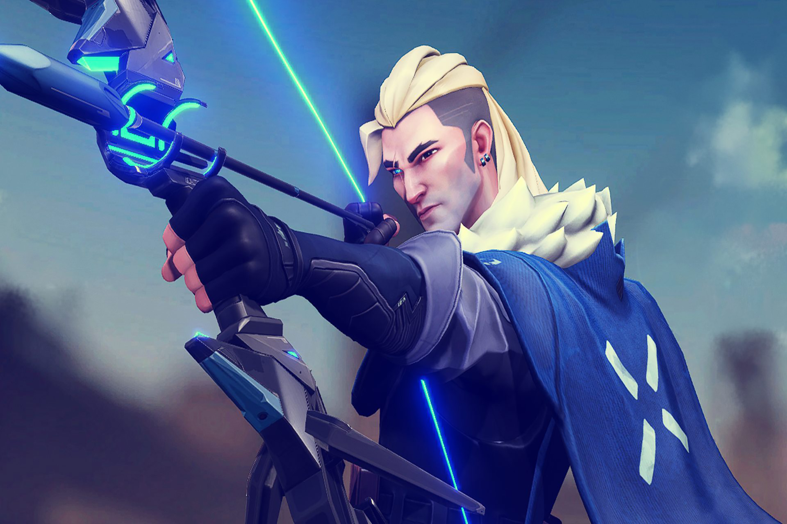
Clase: Iniciador.
Nacionalidad: Rusia.
Disponibilidad: desbloqueado desde el inicio.
Sova es un personaje ideado para los jugadores más "rastreadores". Gracias a sus habilidades y su arco podrás ir siempre un paso por delante de tus enemigos, ya que puedes hacer volar un dron para buscar y marcar oponentes, por ejemplo, o disparar una flecha que emite un pulso durante unos instantes y que resalta el contorno de los enemigos cercanos incluso cuando estos están detrás de las paredes.
Las habilidades especiales de Sova son las siguientes:
Habilidad Q de Sova
Habilidad Q: Flecha explosiva
Tipo: básica.
Coste: 150 créditos.
Función: te equipas con un arco de flechas explosivas. Puedes apuntar y disparar para lanzar la flecha hacia delante, al impactar sobre una superficie explotará y hará daño a enemigos cercanos. Si mantienes pulsado el botón de apuntar se amplía el alcance de la flecha. Y si alternas el modo de disparo puedes llegar a crear hasta dos rebotes del proyectil, algo genial para que las flechas lleguen más lejos.
Habilidad E de Sova
Habilidad E: Proyectil de reconocimiento
Tipo: firma.
Coste: gratuita.
Función: te equipas con un arco con flechas de reconocimiento. Puedes disparar la flecha y cuando esta impacte se activará y revelará en un área cercana la posición de los enemigos que detecte, solo por unos instantes (y esta flecha puede ser destruida). Si mantienes pulsado el botón de apuntar se amplía el alcance de la flecha. Y si alternas el modo de disparo puedes llegar a crear hasta dos rebotes del proyectil.
Habilidad C de Sova
Habilidad C: Dron de reconocimiento
Tipo: básica.
Coste: 400 créditos.
Función: te equipas con un dron de reconocimiento. Puedes usarlo para que se despliegue y controlar su vuelo (aunque eso deja a Sova quieto en su posición, hazlo solo cuando sepas que estás a salvo o a cubierto). Se permite controlar el dron durante unos segundos y puedes disparar un dardo marcador que revelará la posición de cualquier enemigos al que alcance.
Habilidad X de Sova
Habilidad X: Furia del cazador
Tipo: definitiva.
Coste: 8 puntos de definitiva.
Función: te equipas con un arco especial de proyectiles de energía de largo alcance. Este tipo de flecha atraviesa las paredes y además de infligir bastante daño puede revelar la posición de los enemigos que se encuentren a su paso. Se puede usar hasta 3 veces mientras el temporizador de la habilidad está activo.
#18. Viper
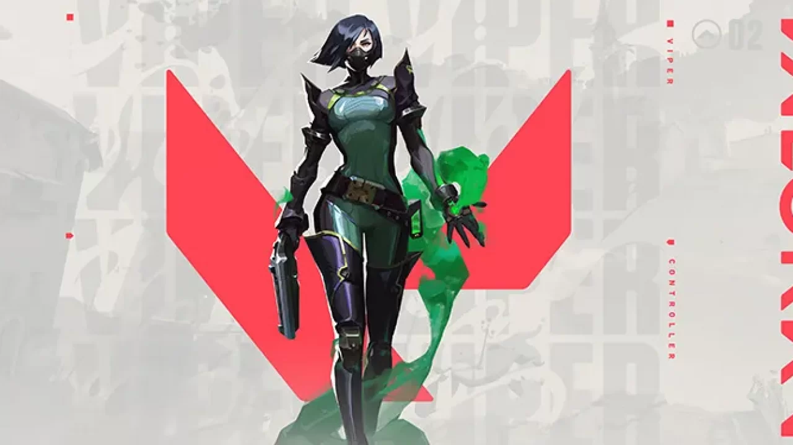
Clase: Controlador.
Nacionalidad: EE.UU.
Disponibilidad: bloqueado de inicio (se puede comprar por 1000 puntos Valorant).
Viper es una agente centrada en aspectos tóxicos y venenosos que puede hacer mucho daño si eres diestro con ella. En especial gustará a los jugadores que quieran ir más a sus anchas sin depender tanto del juego en equipo, aunque bien usada puede apoyar bastante a los compañeros.
Las habilidades especiales de Viper son las siguientes:
Habilidad Q de Viper
Habilidad Q: Nube venenosa
Tipo: básica.
Coste: 200 créditos.
Función: te equipas con una granada de gas que puedes lanzar para que permanezca durante toda la ronda. Al activarla liberarás una nube de gas tóxico a cambio de combustible. La granada se puede usar mas de una vez o incluso recoger para recolocarla.
Habilidad E de Viper
Habilidad E: Pantalla tóxica
Tipo: firma.
Coste: gratuita.
Función: te equipas con un lanzagranadas de gas con el que puedes disparar una larga hilera de granadas. Al activarla creas un muro de gas tóxico a cambio de combustible.
Habilidad C de Viper
Habilidad C: Veneno de serpiente
Tipo: básica.
Coste: 200 créditos.
Función: te equipas con un lanzador químico. Puedes disparar un cartucho que se rompe al impactar contra el suelo lo que genera una zona química persistente que daña y ralentiza a los enemigos.
Habilidad X de Viper
Habilidad X: Pozo de víbora
Tipo: definitiva.
Coste: 7 puntos de definitiva.
Función: te equipas con un pulverizador químico que puedes disparar para pulverizar una nube química en todas las direcciones alrededor de Viper. Esto genera una gran nube que reduce el alcance de la visión y la vida máxima de los jugadores que se encuentren dentro.
#19. Yoru
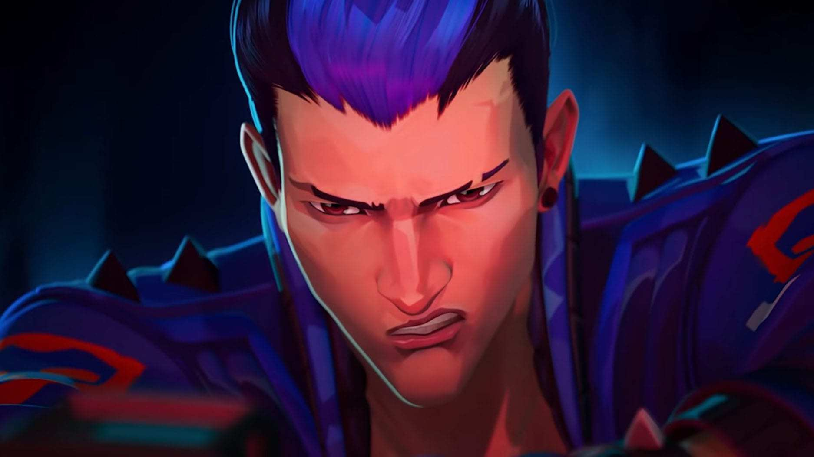
Clase: Duelista.
Nacionalidad: Japón.
Disponibilidad: bloqueado de inicio (se puede comprar por 1000 puntos Valorant).
Yoru abre agujeros en el tejido de la realidad para infiltrarse tras las líneas enemigas sin ser visto. Utiliza el engaño y la agresividad por igual para acabar con sus objetivos antes de que sepan qué ha pasado.
Las habilidades especiales de Yoru son las siguientes:
Habilidad Q de Yoru
Habilidad Q: Punto ciego
Tipo: básica.
Coste: 250 créditos.
Función: arrancas un fragmento dimensional inestable de la realidad, al lanzarlo activa un destello que se carga al impactar contra una superficie sólida.
Habilidad E de Yoru
Habilidad E: Infiltración
Tipo: firma.
Coste: gratuita.
Función: preparas un vínculo de grietas, se puede lanzar hacia adelante para teletransportarte a la ubicación o colocarlo en algún lugar en concreto.
Habilidad C de Yoru
Habilidad C: Engaño
Tipo: básica.
Coste: 100 créditos.
Función: te equipas un eco que imita el sonido de pisadas cuando se activa. Puedes activarlo y enviarlo hacia delante o colocarlo en un sitio.
Habilidad X de Yoru
Habilidad X: Viaje interdimensional
Tipo: definitiva.
Coste: 7 puntos de definitiva.
Función: te colocas una máscara que permite ver entre dimensiones, los enemigos que estén fuera no podrán verte ni hacerte daño.
VOLVER a la pagina principal.
Para descargar el juego de su pagina :) ya no sabia mas que hacer lic :(